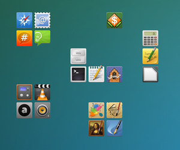

Apwal
Dieser Artikel wurde für die folgenden Ubuntu-Versionen getestet:
Ubuntu 14.04 Trusty Tahr
Zum Verständnis dieses Artikels sind folgende Seiten hilfreich:
Apwal  ermöglicht, Programmstarter als Symbole (Icons) in beliebigen Gruppierungen auf dem Desktop anzuzeigen. Dabei werden die einzelnen Gruppen nur so lange angezeigt, wie es gewünscht ist und anschließend ist die Arbeitsfläche wieder frei von Anwendungsstartern. Beliebig viele Icon-Gruppen können in einzelnen Konfigurationen gespeichert und über eine grafische Oberfläche bearbeitet werden.
ermöglicht, Programmstarter als Symbole (Icons) in beliebigen Gruppierungen auf dem Desktop anzuzeigen. Dabei werden die einzelnen Gruppen nur so lange angezeigt, wie es gewünscht ist und anschließend ist die Arbeitsfläche wieder frei von Anwendungsstartern. Beliebig viele Icon-Gruppen können in einzelnen Konfigurationen gespeichert und über eine grafische Oberfläche bearbeitet werden.
Installation¶

Folgendes Paket muss installiert [1] werden:
apwal (universe)
 mit apturl
mit apturl
Paketliste zum Kopieren:
sudo apt-get install apwal
sudo aptitude install apwal
Einrichtung¶
Zunächst sollte die Konfigurationsdatei ~/.apwalrc.xml als Kopie gesichert werden.
Die grafische Oberfläche zur Bearbeitung der Konfigurationsdateien wird wie folgt aufgerufen [2]:
apwal --edit --config .apwalrc.xml
Im Reiter "Editor" kann an beliebiger Stelle ein Icon hinzugefügt werden, das beim Aufruf von Apwal erscheinen soll. Um ein neues Icon hinzuzufügen reicht es aus auf ein gewünschtes Feld doppelt zu klicken und anschließend bei dem Reiter "Icon Selection" eins auszuwählen. Im Feld "Command Line" ist der Befehl einzugeben, mit dem man das Programm startet. Die Position der Symbole wird im Editor per Drag and Drop bestimmt, wobei der rot markierte Punkt für den Mauszeiger steht.
Unter "Icon Selection Pref" kann man einstellen nach welchen Icon-Formaten, Dateiendungen und in welchen Pfaden gesucht werden soll. Die Standard-Pfade sind bereits eingetragen. Für eine größere Icon Auswahl ist es sinvoll, die Suche nach Icons kleiner als 48x48 Pixel zu erlauben. Die Iconsuche beim Starten des Konfigurationseditors dauert aber einige Zeit. Schneller geht meist, hier alle Pfade leer zu lassen und das gewünschte Icon im Dateibrowser zu suchen (/usr/share/icons/). Dann den Pfad und den Dateinamen einfach unter Icon im ersten Reiter einfügen.
Die Dauer der angezeigten Icons wird im Reiter "Apwal Preference" mit der Option "Launcher Timeout (in second)" festgelegt. Mit einem Häkchen bei der entspechenden Option wird Apwal nach dem Anklicken eines Icons sofort beendet, ohne den zuvor angegebenen Zeitraum abzuwarten.
Benutzung¶
Um apwal mit geringem Aufwand und unterschiedlichen Konfigurationen aufrufen zu können, kann man für das Programm mehrere Tastenkombinationen in seinem Desktop festlegen, denen man nach folgendem Schema Befehle zuordnet:
apwal --config .apwalrc123
Möchte man das Programm automatisch mit der Anmeldung starten, hilft der Artikel Autostart weiter.
 Programmübersicht
Programmübersicht- Erstellt mit Inyoka
-
 2004 – 2017 ubuntuusers.de • Einige Rechte vorbehalten
2004 – 2017 ubuntuusers.de • Einige Rechte vorbehalten
Lizenz • Kontakt • Datenschutz • Impressum • Serverstatus -
Serverhousing gespendet von